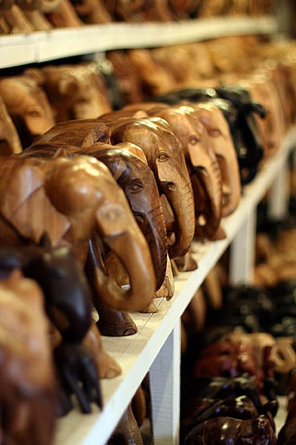
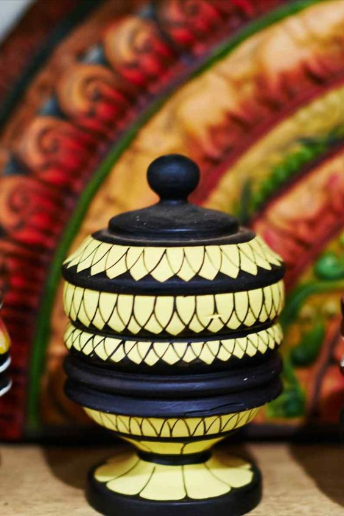
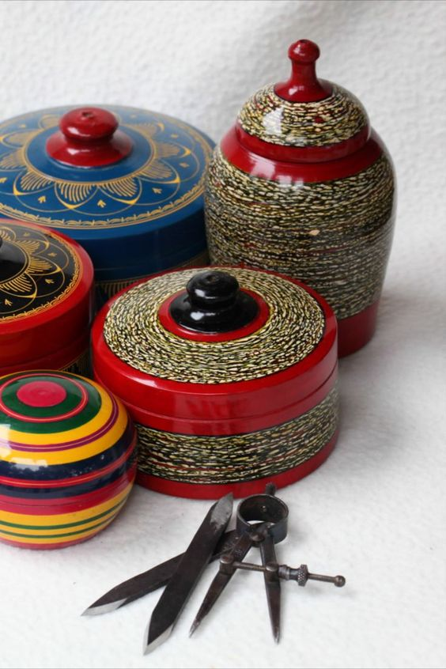
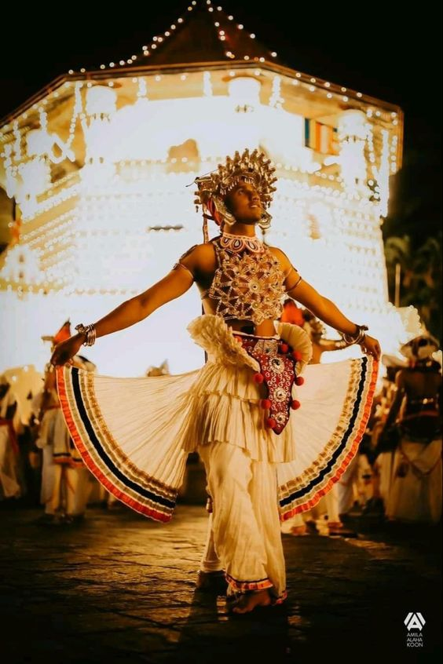
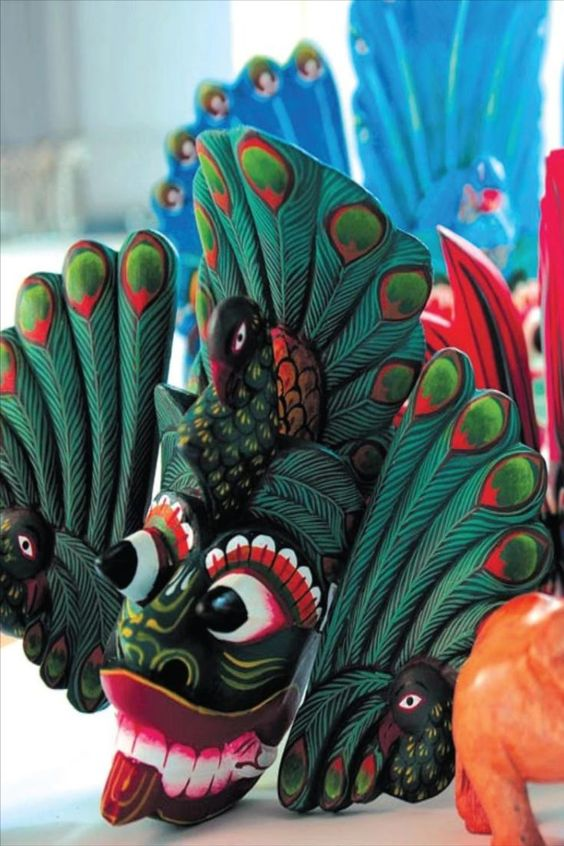
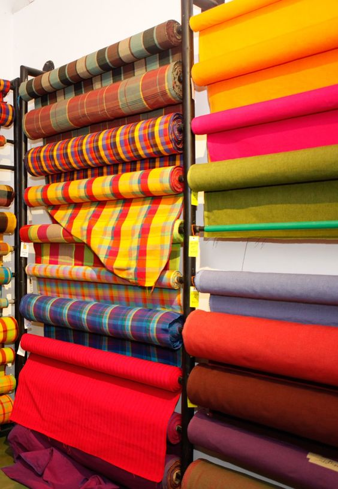
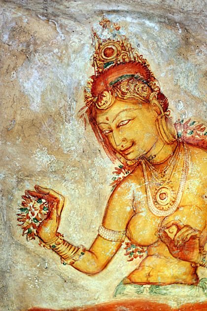
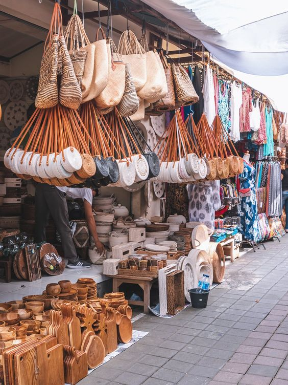

Art & Craft
Sri Lankan art and craft are deeply rooted in the island nation's rich cultural heritage, dating back thousands of years. Influenced by Buddhism, Hinduism, and various other cultural interactions, Sri Lankan art showcases a unique blend of indigenous styles with outside influences.
Traditional Crafts: Sri Lanka boasts a wide array of traditional crafts, each with its distinct techniques and designs.
- • Handloom Textiles: The island is renowned for its handwoven fabrics, such as saris and batiks, featuring intricate designs and vibrant colors.
- • Pottery: Sri Lankan pottery is often functional and decorative, with both traditional and contemporary styles produced by skilled artisans.
- • Wood Carving: Intricately carved wooden statues, masks, and decorative items are popular expressions of Sri Lankan woodcraft.
- • Metalwork: Brass and silverware are skillfully crafted into ornate utensils, religious items, and decorative pieces.
- • Basketry: Skilled artisans weave beautiful baskets and containers using various natural materials.
- • Visual Arts: Traditional Sri Lankan paintings, murals, and sculptures often revolve around religious themes and historical events. Elaborate frescoes can be found in ancient temples, showcasing stories from Buddhist and Hindu scriptures.
- • Performing Arts: Sri Lanka's performing arts are vibrant and diverse, with dance and music being integral parts of the cultural landscape. Kandyan dance, a traditional dance form with elaborate costumes, is particularly famous. Various dance rituals and folk dances are also performed during religious festivals and special occasions.
- • Contemporary Art: Modern Sri Lankan artists have been influenced by Western art movements while preserving their cultural identity. Contemporary artists explore various mediums, and galleries in cities like Colombo showcase their works.
Sri Lankan art and craft play a vital role in preserving the nation's cultural heritage while also providing a means of livelihood for skilled artisans. Whether it's the intricate wood carvings, vibrant handloom textiles, or mesmerizing dance performances, Sri Lanka's art and craft continue to captivate locals and tourists alike, celebrating the island's artistic legacy.







